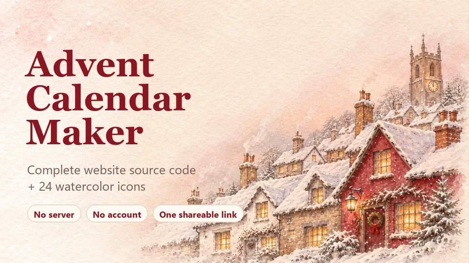

$19
Advent Calendar Maker (website source code)
A ready-to-host website where anyone writes 24 surprises and shares one link.

What is inside
- The complete website: HTML, CSS and JavaScript, no server, no database, no account
- Watercolor red-and-white design with 24 painted icons, one per door
- Each door opens on its own day, from December 1st to Christmas Eve
- 24 starter messages, 4 colour themes, a setup guide for free hosting
- 24 transparent PNG icons and 5 large paintings for your own projects
- Commercial license for your own and your clients' sites
Try it right here
This is the real thing running live. Tap a door, or press “Make my calendar” to create your own.
What it looks like
Good to know. The artwork was created with an AI image generator from my own written descriptions, then edited and laid out by me. Images made purely by AI may not be protected by copyright in some countries, so exclusivity cannot be promised. Printables are for personal use. Icon sets and decorations may be used in your own projects, personal or commercial, but not resold or redistributed. This page shows web-size previews; the download is much sharper.